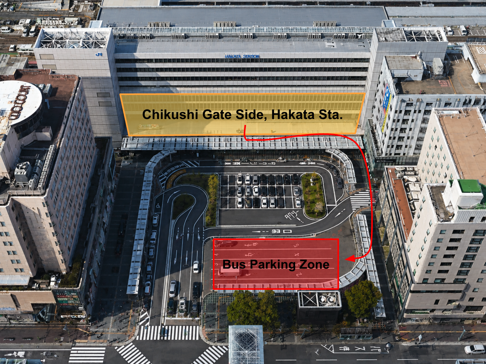
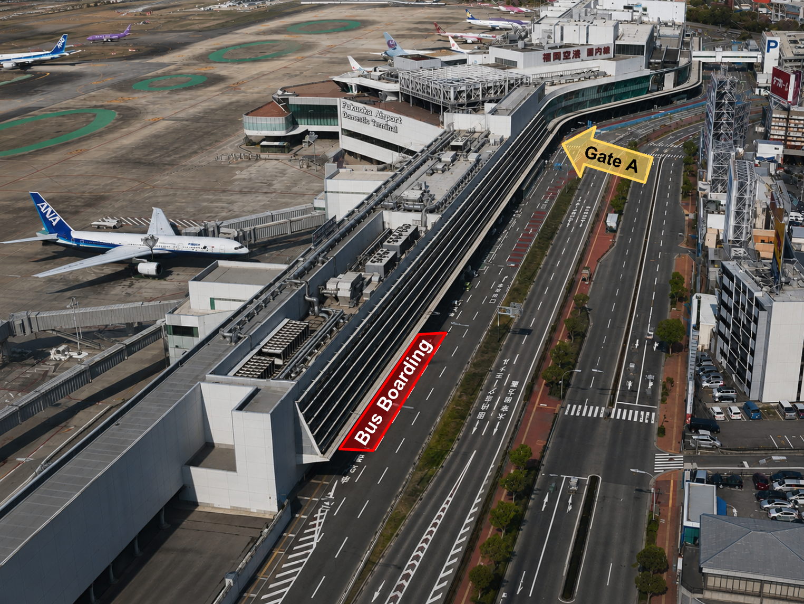
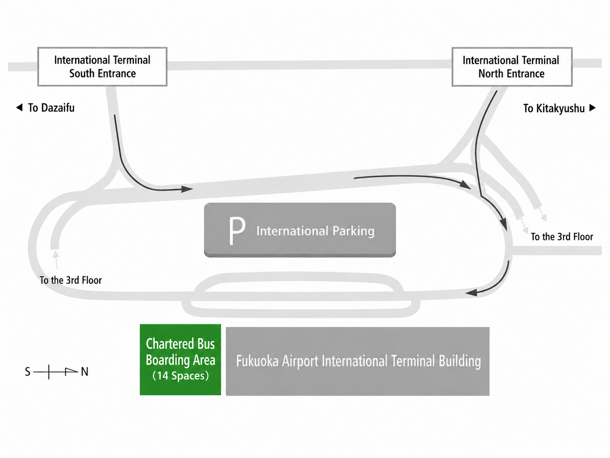

Oral
10-15 minute speech with 5-minute Q/A.
Kuju/Aso, Japan · August 27-29
The 2nd International Workshop on Cyber-Synergy
Outline
Following the success of IWCS 2024, IWCS 2026 will bring together researchers, students, and international partners for academic exchange in the Kuju/Aso area of Kyushu. The workshop aims to strengthen collaboration between Japan, Korea, and broader international research communities, while providing students with a supportive setting for presentations, discussion, and future research synergy.
Registration
Program
10-15 minute speech with 5-minute Q/A.
Free format poster presentation in A0 size.
| Time | Session | Presenter | Affiliation | Title |
|---|---|---|---|---|
| 16:00 | Arrival at Venue | |||
| 16:30-17:30 | Oral Session 1 | Sungjun Yun | Pusan National University | Near-Data Processing for Homomorphic Ciphertext Operation Offloading over NVMe-oF |
| Jisuk Chae | Sungkyunkwan University | ViLaR-IMO: Vision-Language Route Selection with Camera-2D LiDAR Fusion for Indoor Robots | ||
| Hye-min Shin | Sungkyul University | Formalizing Safe Inference Scheduling for Energy-Harvesting Physical AI under Non-stationary Conditions | ||
| Time | Session | Presenter | Affiliation | Title |
|---|---|---|---|---|
| 09:00-10:20 | Oral Session 2 | Atsuhiro Yano | The University of Osaka | Real-Time Pedestrian Flow Prediction in Indoor Digital Twins by Selective Re-simulation |
| Taehun Kim | Pusan National University | Parameter-Efficient Attractor Tuning for Improving Reasoning in Pretrained Small Language Models | ||
| MUGABARIGIRA BIEN AIME | Sungkyunkwan University | Computing-Aware Traffic Steering of Context-Aware Navigation Protocol in Intelligent Transportation Systems | ||
| Joseph Ahn | Sungkyunkwan University | An Integrated Security Service System for 5G Networks using an I2NSF Framework | ||
| 10:40-12:00 | Oral Session 3 | Amu Suemoto | Kyushu University | GRoFA: Noise-Gated Adapters for Learning Fair and Robust Face Embeddings |
| Min-Jae Kim | Pusan National University | Demo-Efficient Hierarchical VLA Learning with VLM-Generated Atomic Skill Sequences | ||
| Jimin Lee | Sungkyunkwan University | IPv6 Wireless Access in Satellite Networks (IPWASN) | ||
| 13:00-14:00 | Poster Session 1 | ZHUANG YANHAO | Chiba University | Design of a Temporal-Difference Event-Driven Convolution Accelerator for Low-Time-Step Spiking Neural Network Inference |
| Lee Liu Cheng | Kyushu University | Toward Cognition-Aware Debiasing in Knowledge Tracing: Conditioning Abnormal Behavior on Bloom's Taxonomy | ||
| Rami Naeem | The University of Osaka | A Questionnaire-Only Counterfactual Machine Learning Approach to Assess the Spatial Impact of Green Mobility Vehicles in Urban Parks: A Wakayama Castle Case Study | ||
| Takao Yuta | The University of Osaka | Wi-Fi CSI-Based Propeller RPM Estimation for Indoor Drones During Actual Flight | ||
| JunHwan Huh | Tokyo University of Science | Empirical GNN-Based Performance Modeling for Indoor Multi-RAT Networks | ||
| Ryoichi Suzuki | Kyushu University | Engagement of Conversations between Elderly People and AI | ||
| Junhaeng Lee | Chung-Ang University | BerryFormer: A Multimodal Deep Learning Framework for Strawberry Growth Stage Classification Using Visual and Environmental Sensor Fusion | ||
| SoonIL Hong | Chung-Ang University | Cross-user Generalization of HMD Based Head Gesture Recognition Models for XR Interaction | ||
| Jung-Hyun Kim | Pusan National University | A Channel-Wise Encoder and SSM Inspired Model for sEMG Gesture Recognition | ||
| Hwang Woochan | Pusan National University | QA-to-Tool: Function Schema-Guided Reconstruction of Q-A Data for End-to-End Tool-Use Training | ||
| Jaeho Lee | Sungkyul University | An ADC-Free Low-Power Conductivity Sensor Node with LoRa for Road Surface Ice Detection | ||
| Junha Yoon | Sungkyul University | Real-Time Learner Engagement Estimation Using Multimodal Behavioral Signals | ||
| Ji-Hyeon Jeon | Sungkyul University | Determinants of n-gram Speculative Decoding Speedup on Single-Stream Mobile CPUs and Its Degradation with Larger Models | ||
| Younglim Choi | Dong-A University | Integrity Diagnosis of Effluent Total Nitrogen Data in a Full-Scale Wastewater Treatment Plant Using TMS Status Information | ||
| 14:20-15:40 | Oral Session 4 | Keisuke Matsuda | Kyushu University | Toward an Exploratory Definition of High-Stimulus, Low-Satiety Videos on YouTube and a Selective Grayscale Intervention for Thumbnails |
| Sunghun Kim | Pusan National University | A Multi-Dimensional Evaluation Framework for Catastrophic Forgetting in Vision-Language Models | ||
| Jinho Jang | Pusan National University | LLM-Enhanced Adaptive Proactive Edge Caching for 5G/6G Networks | ||
| WANG XUDONG | Sungkyunkwan University | AA-STGCN-Based Predictive Dynamic Routing for Large-Scale UAV Delivery in Urban Airspace | ||
| 16:00-17:20 | Oral Session 5 | Yue Su | Chiba University | Performance Enhancement of Sharded IoT-Blockchain Systems through Broker Selection |
| Youngtae Goh | Pusan National University | FedCAO: Class-Aware One-vs-Rest for Personalized Federated Learning | ||
| Yun-Seob Kim | Pusan National University | Toward Fully Neural LoRa Demodulation: Learned Offset Compensation Beyond Preamble Detection | ||
| KiHyun Shim | Sungkyunkwan University | Intent-Driven Management for IoT Devices with 3GPP Data Models |
| Time | Session | Presenter | Affiliation | Title |
|---|---|---|---|---|
| 08:20-09:20 | Poster Session 2 | Yamin Theint | Chiba University | An Implementation of Semantic Conflict Detection and Resolution for Intent-Based Networking |
| Wataru Aiura | Kyushu University | Designing an XR Picture-Book Storytelling System through High School Practice | ||
| Koushi Hiraoka | Kyushu University | Can Vision-Language Models Serve as Proxies for Subjective Privacy Judgment? | ||
| Riku Nakao | The University of Osaka | A Diffusion Model-based Approach to Solve the Transportation Plan for Adult Daycare Facilities | ||
| Nakata Hiroya | The University of Osaka | Autocorrelation-Based Respiratory Rate Estimation Using Bluetooth Channel Sounding | ||
| Choi Eram | Chung-Ang University | On-Device Lightweight Deep Learning for Human Activity Recognition System for Low-Power Always-On Monitoring | ||
| Keunbyeoul Park | Chung-Ang University | Speech-Based Sentiment Analysis of YouTube Shorts Product Reviews: An Automated Pipeline for Analyzing Creator Sentiment Expression | ||
| euihyeon kim | Pusan National University | RAG Pipeline Offloading via NVMe-oF for Edge LLM Inference | ||
| Insung Jang | Pusan National University | Identifying and Mitigating Cross-Device CSI Heterogeneity via Transfer Learning | ||
| DongHee Yun | Pusan National University | Gated Aggregation for Forecast-Time Misalignment in Federated Online Time-Series Forecasting | ||
| Eunyoung Cho | Pusan National University | Towards Deploying Mamba-Based ASR on NPU-Enabled MCU Edge Devices | ||
| AJeong Kim | Pusan National University | Search Before You Predict: Toward Search-Augmented Reasoning for 3D Visual Grounding | ||
| 09:30 | Depart venue | |||
Venue & Access
The workshop will be held at Kuju Joint Training Center in the Kuju/Aso area of Japan.
View location on Google Maps


Notice
TBA
Inquiry
Previous Event
The 1st International Workshop on Cyber-Synergy was held in Fukuoka. The archive remains available on the previous event site.
View IWCS 2024 archive